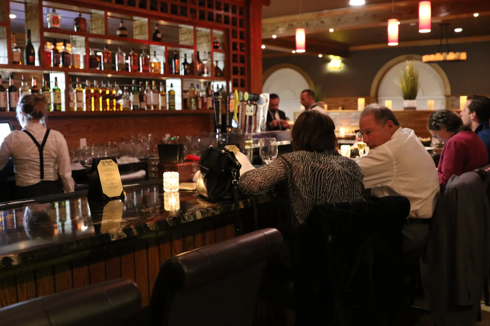
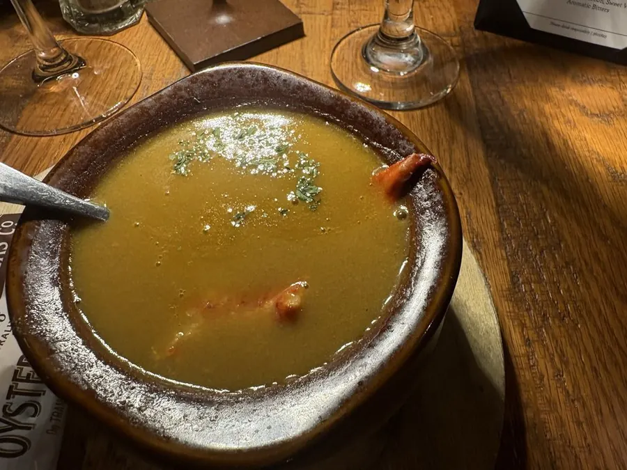
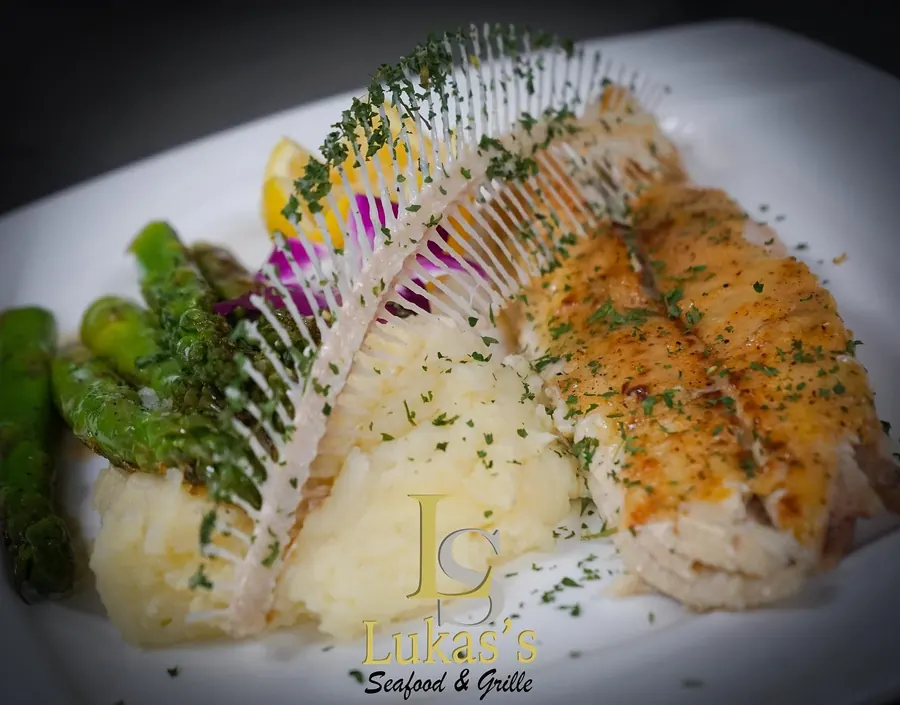
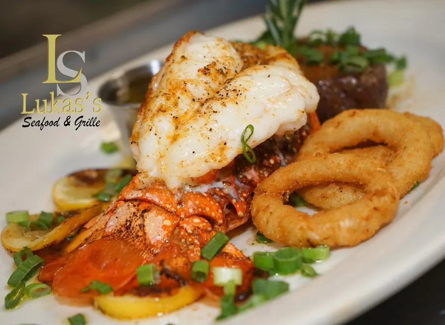
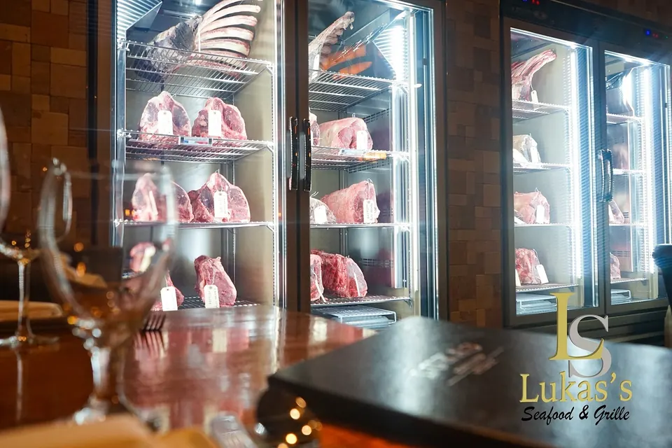
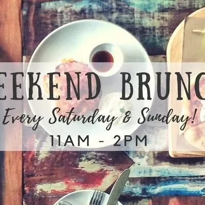
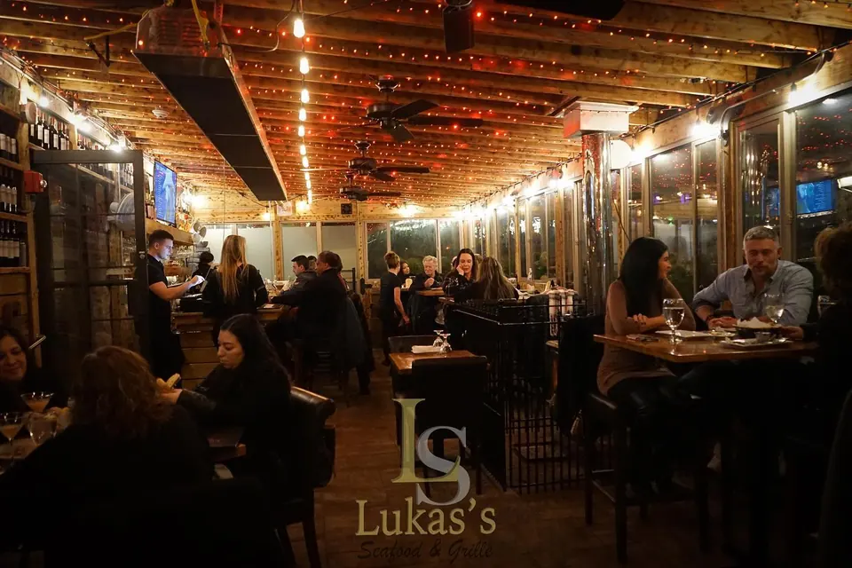
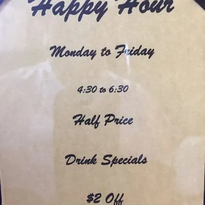
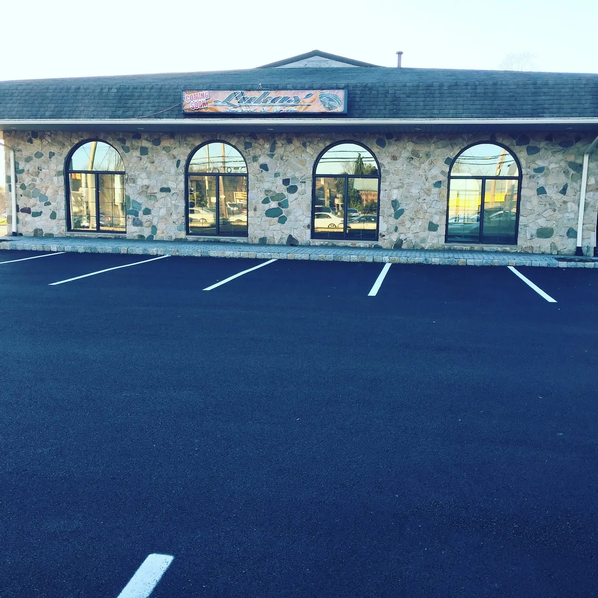

From the sea.
East Coast Blue Point oysters on the half shell, a chilled shellfish sampler and a raw bar stacked with the day's catch.

Warren, New Jersey · Town Center
Seafood, steaks and cocktails in the heart of Warren — a family kitchen built on Mediterranean cooking, the freshest Central Jersey seafood and a serious steak program.
The house
This is truly a family establishment — three brothers, Sonny, Johnny and Roberto, and a close family friend came together to bring Central New Jersey the freshest seafood and the finest meats. Lukas’ is the fourth restaurant they have opened together, and it carries the same idea they have always cooked from: only a truly authentic taste of Mediterranean cooking and culture gives a guest an incomparable dining experience.
Fresh seafood from the coast, USDA Prime beef from the best programs in the country, a bar worth staying for, and a room that feels like a celebration. Lunch, brunch, dinner, or happy hour at the full bar.
Read the full storyEast Coast Blue Point oysters on the half shell, a chilled shellfish sampler and a raw bar stacked with the day's catch.
USDA Prime beef, dry-aged and broiled to perfection, arriving sizzling on a 500° plate.
A full bar with house cocktails, a deep martini list, an extensive wine list and happy hour Monday to Friday.
From the menu
A short look at the plates guests order most. The full à la carte menu, with every sauce, side and supplement, is on the menus page.

Appetizer
Shrimp, clams, mussels and oysters, served cold with lemon and horseradish.

Soup

Entrée

Entrée

Steak

Appetizer
The signature crudo, dressed in lemon and extra virgin olive oil.

Steaks & chops
Our perfected broiling method and seasoning techniques ensure each cut of USDA Prime beef arrives cooked to perfection and sizzling on a 500° plate.
Sauces are 3 each — Horseradish Cream, Béarnaise, Au Poivre, Barolo Demi-Glaze, Chimichurri. A 6oz Brazilian lobster tail is 22.
The full steak listPrix fixe
Sunday through Thursday, choose a first course and a main course for $45. Sides are $9, a lobster tail is $18, and there are no substitutes — our chefs have it handled.


Our story
Sonny Gjevukaj arrived in the United States from Kosovo in 1996 and opened the family’s first restaurant in Cranford in 2010. Today the group runs four restaurants across Central Jersey — and Lukas’ is where all of it comes together: Mediterranean cooking, the freshest seafood and the finest meats, served in a room built for long evenings.
Three brothers and a close family friend, four restaurants, one kitchen philosophy. It is a story that belongs to Warren alone.
Also from the family
Gather at Lukas’

Every weekend
Saturday and Sunday, 11am to 2pm. Eggs, griddle favorites and a Bloody Mary to start the weekend properly.

Private dining
Celebrations, group dinners and nights that need their own room. Ask about the private dining room and we’ll set the table.

Catering
Hosting an event away from the restaurant? Order catering through ezCater and bring the kitchen to you.
A look inside
Dining room, bar, patio and the plates that come out of the kitchen. Follow @lukasnj_ for the latest.
Dining and gallery photography via Restaurantji, and from the house at 61C Mountain Blvd.
Guests
Ratings as published on each platform.

Visit Lukas’
61C Mountain Blvd
Warren, NJ 07059
| Monday | 11:30a – 9p |
|---|---|
| Tuesday – Friday | 11:30a – 10p |
| Saturday | 11:30a – 10p |
| Sunday | 11:30a – 9p |
| Weekend brunch | Sat & Sun, 11a – 2p |
Holiday hours may vary — reservations are recommended.